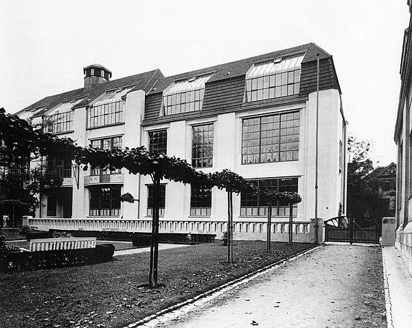
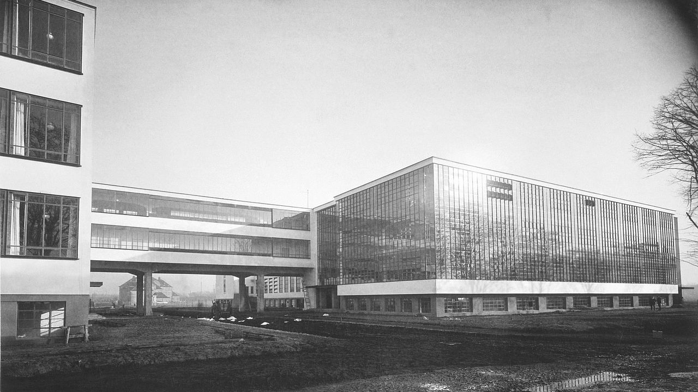
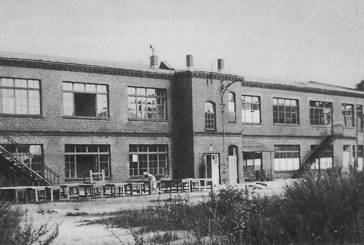
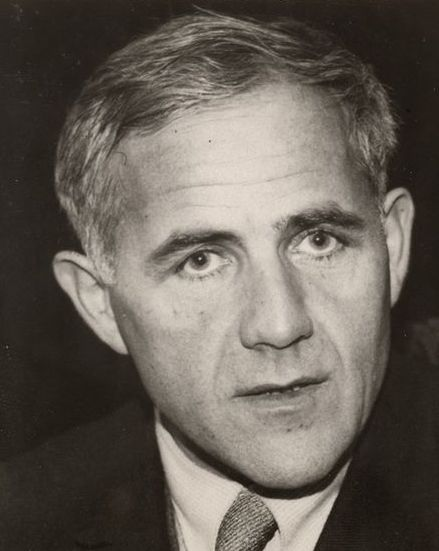
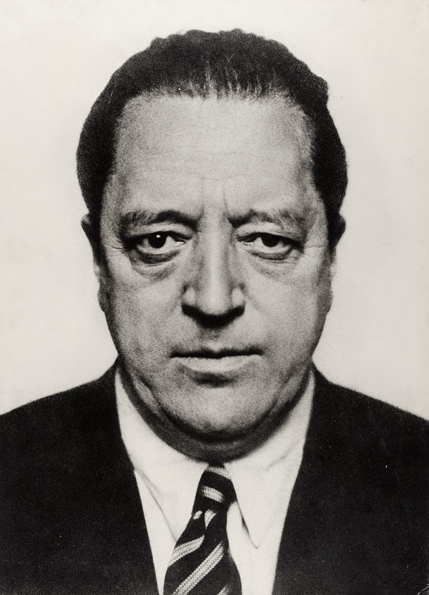
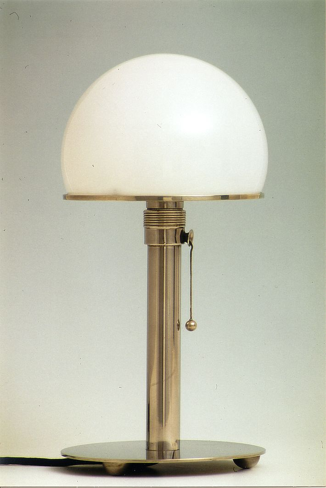
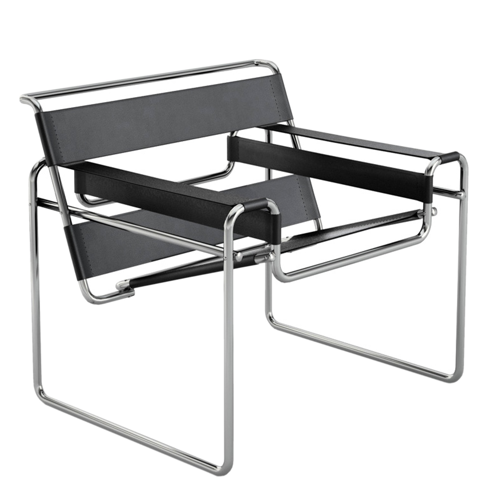
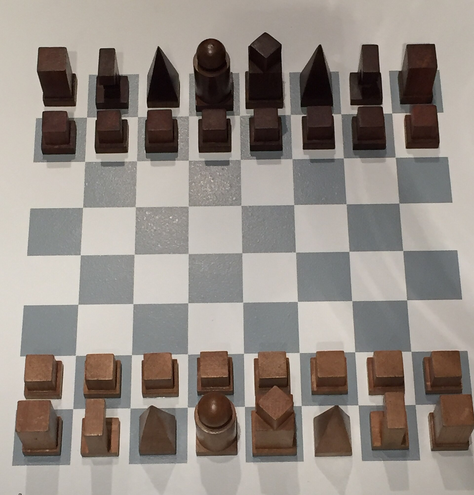

DIE PHASEN DES BAUHAUSES

Bauhaus in Weimar (1919–1925)
Die Gründung des Bauhauses durch Walter Gropius in Weimar markiert den Beginn einer radikalen Transformation. Hier stand die Zusammenführung von traditionellem Handwerk und moderner Kunst im Fokus.

Bauhaus in Dessau (1925–1932)
Nach dem Umzug nach Dessau erlebte das Bauhaus seine produktivste Ära. Das weltberühmte Bauhaus-Gebäude verkörpert puren Funktionalismus.

Das Berliner Finale (1932–1933)
Unter der Leitung von Ludwig Mies van der Rohe zog das Bauhaus nach Berlin. Trotz des Drucks verbreiteten die Emigranten die Ideen weltweit.
DIE MEISTER

Walter Gropius
Der Visionär, der Kunst und Handwerk verschmelzen ließ. Er schuf das Fundament des modernen Designs.

Hannes Meyer
Er stellte die sozialen Bedürfnisse in den Vordergrund: „Volksbedarf statt Luxusbedarf“.

Ludwig Mies van der Rohe
Der Meister des Minimalismus. Mit seinem Prinzip „Weniger ist mehr“ prägte er die Architektur.
WICHTIGE WERKE

Wagenfeld-Lampe (1924)
Ein absoluter Klassiker des Produktdesigns von Wilhelm Wagenfeld. Diese zeitlose Tischleuchte vereint Glas und Metall in einer rein funktionalen, geometrischen Form.

Wassily-Stuhl (1925)
Der von Marcel Breuer entworfene Sessel aus nahtlosem Stahlrohr revolutionierte den modernen Möbelbau. Er steht für industrielle Leichtigkeit und pure Ästhetik.

Bauhaus-Schachspiel (1923)
Gestaltet von Josef Hartwig. Die kubischen Figuren erklären durch ihre geometrische Form direkt ihre optische und strategische Bewegungsrichtung im Spiel.